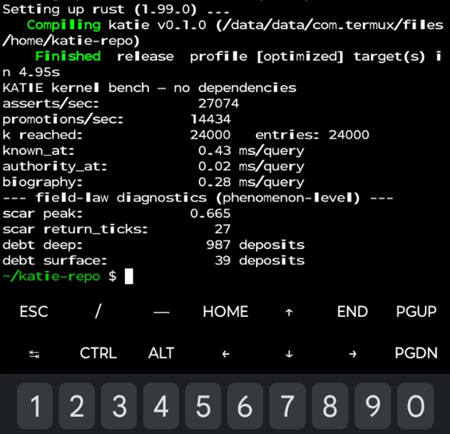

Anything in
Examples, not limits:
Agent-pair signals
Events / event groupings
User / world-model input
+ any future signal

KATIE engine / KID architecture
KATIE assigns every Kernel ID. Each KID is a live kernel instance: a portable signal path that runs the math assigned to its Knowledge Data object and emits a result with its record already inside it.
“Math in, math out — but what object is the math assigned to? That’s the thing.”
Assigns each KID at birth, registers it, and pays attention as the collection grows.
Examples, not limits:
Examples, not limits:
No KID, no read, no write. KATIE assigns the Kernel ID before a kernel enters the signal path. From there, the record is a natural byproduct of running the math on whatever its KD represents.
Swap the preset and the live kernel behaves differently. The values below are illustrative — KATIE can assign every box per KD.
The unit of meaning can change without changing the kernel.
Measure what hit now and what remains.
Carry a ruling and the authority behind it.
If action does not close it out, its tail keeps working the greybox.
An unresolved attempt leaves debt: pressure still in the signal.
The kernel tracks whatever object its math is assigned to, each with its own traces.
Field proof
The whole KATIE kernel — record, both traces, scar and debt diagnostics — built from source on a budget phone and benched there. No Pi, no datacenter, no excuses.

v1.0 · test suite
Before anything new gets built, the kernel's behavior is pinned by sixteen tests. Each one is a plain sentence about what the machine guarantees.
k = 0, no entries, no subjectsfirst encounter, stamped and liveuse regrade or revoke insteadknown_at, biography, authority_atwhat was done, under which beliefhistory stays, exactly one livethe past stays queryablethe lie stays; trust diesrevoke() is the only doorthe tens place is the escape bitno KID, no read, no writeout-of-range input can't break itt, e, k — the object is the linkvariable step, per writepools move with the recordeach pool its own boxesShe assigns and watches the kernels. Each registered KID tracks Impact now, Influence through history, and the K-record formed by the math.